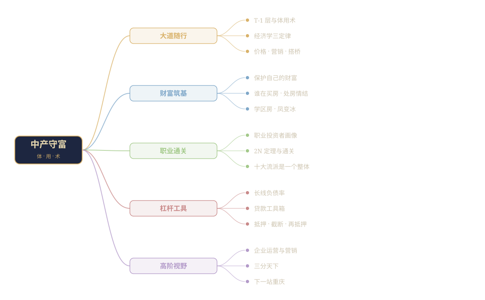

中产阶级如何保护自己的财富
〇 · 书籍信息
基本信息
| 书名 | 《中产阶级如何保护自己的财富》 |
|---|---|
| 作者 | yevon_ou（欧成效），房地产投资论坛「水库」创始人，职业房产投资者。全书为其 2000—2017 年文章结集 |
| 出版 | 磨铁数盟出品，ISBN 9787505740181；全书五部分 65 篇，约 14.5 万字 |
| 体裁 | 文集。五部分层层递进：经济学底层（世界观）→ 房子怎么买（标的）→ 房产投资这门职业（行当）→ 借贷的技巧（杠杆）→ 理解真实世界（全局） |
| 一句话 | 中产要保住社会排名，全要素增长必须跑到每年约 22%；靠工资永远到不了——出路只有换模式：从「存钱」爬到「持有资产」，再到「构建以房贷为中心的资产组合包」。 |
一 · 核心主题总览
全书 65 篇散而不乱，底层只讲六组概念。抓住它们，全书就能压成一张纸：
① 体 · 用 · 术（作者的求知框架）
体是基础理论（方向绝不能错，作者取奥地利学派）；用是应用层（把 M2 增长这类大知识变成商机）；术是碎片化技巧（买房带旧钞砍价、答「自住」不答「投资」）。作者的核心批评：大多数人止步于「术」，像背 SAP 两百个表格的职员，从不问 T-1 层的底层原理——题海战术的病根，就是只忙表层。
② 经济学三定律（全书的世界观）
第一定律 dT>0：财富来自交易，交易越多财富越多，帕累托最优即交易机会耗尽；第二定律：市场创造一切，除了市场本身——暴力不能纳入市场方程，须额外掏「国防费」；第三定律 R≠0：暴力无法根除，只能尽量削减。由此推出「二阶经济学」：任何政策都要考虑对方的反击——对房东征税，结果是房源减少、价格上升。
③ 三维价格（楼市认知的基石）
价格不是 K 线图上的一个点，是一座山：总体价格（99 个业主的心理价位）与边际价格（最低那 1 套抛盘）是两个不同的量，媒体只看得见边际。由此派生「价格深度」（下跌的速度）、「笋盘」（总体价与边际价的冲突处，买入即赚）与「搭桥」——把现金变成翻几倍的低流动性资产，再把资产变成翻几倍的现金。
④ 模式论：存钱 → 资产 → 负债（全书总纲）
低级模式：存钱，无风险利率 3%～4%，跑输 M2；中级模式：持有实物资产（房产、特许经营权），随 M2 水涨船高；高级模式：借钱，构建以房贷为中心的资产组合包。中产陷阱：人力资本保值、金融资本缩水，储蓄上限约等于工资的 10 倍——「从底层爬到中产容易，中产爬到富人极难」，差的是一个「模式」。
⑤ 2N 定理与流派（把总纲变成施工图）
2N：每年买两套，5 年 10 套后进入「卖 2 买 4」的循环滚轮。财务自由的量化刻度：800 平方米（业余通关）／650 内环平方米（约 5000 万）。流派由交易成本（单次约 20%）筛选：高成本环境里只有「老破小」与「大面积低单价（囤房流）」能活，逼出「只进不出」的持有哲学。
⑥ 算账视角的两条暗线
其一，利率不敏感：每加息 1%，20 年期月供约 +7%，叠加首付后对房价影响上限约 5%——「房贷总是越还越轻」；其二，杠杆的真实刻度：长线负债率约 22%，平均贷款年限约 8 年（「盐水兑水」：5 成抵押往里兑，上限就是 5 成）。这两条是全书最像财务体检报告的部分，每一条都能用 Excel 复算。
二 · 第一部分 社会科学皇冠上的宝珠——经济学
全书的世界观地基。作者先用「体用术」立框架，再用三定律立经济学，最后落到篇名之作：中产的钱为什么留不住、怎么办。
一、大道随行：体用术与「T-1 层」
- 开篇从 SAP 系统讲起：两百个表格的本质只是一个数据库的输入输出——懂了大框架，细节才有意义；不懂框架，努力只是题海。
- 「万物理论」的类比链：炼金术→化学→元素周期表→核物理→夸克→弦论。每一层突破都带来工程力量的跃迁——基础理论的意义是「算出别人看不见的东西」。
- 但基础科学家往往不富，因为「体，用，术」三层离钱的距离不同：用（应用）离消费者更近，术（碎片技巧）单条就能赚过教授年薪。合格的投资人三者都要：体保证方向不错，用把知识变成钱，术解决临门一脚。
二、经济学三定律与二阶经济学
- 第一定律 dT>0：樵夫的小提琴 + 音乐家的斧子，只有交换后财富才最大化；广义地把上班也算交易，则人类全部财富可压缩为一个公式——交易越多，国家越富。萨缪尔森承认商品从制成到消费者手中差 4 倍距离：25% 是制造，75% 是贸易。
- 第二定律：任何交易 A、B 双方都满意，福祉都增加；暴力必有一方不满意，且 B 损失的大于 A 得到的——「抢劫越多，国家越穷」。真正该惊讶的不是穷人有穷国，而是「这世界怎么还会饿死人」——因为那里没有市场。国防费这笔钱千万不能省。
- 第三定律 R≠0：暴力集团互相吞噬，最终只剩一个「最终暴力」；镇警察局可以外包，是因为省里有更大的暴力压着——递归无解，只能承认「绝对零度达不到」，把暴力尽量削减。
- 二阶经济学：一阶只考虑「我要怎样」，二阶要考虑「我这样做后对方如何反击」。对差额征 20% 所得税→房东惜售→房源减少价格上升；打压开发商→供应减少→房价更贵。「死了张屠夫，不吃带毛猪」的逻辑错在：换人就要涨价。金句级结论：消费者和消费者竞争，生产者和生产者竞争；生产者和消费者从不竞争。
三、价格、营销与搭桥
- 市场营销：综合评分最高的「9,9,9,9」商品会输给细分市场的「10,1,1,1」——因为每个消费者竖着做选择，只为自己的偏好付费。甲之蜜糖，乙之砒霜，单一产品不可能覆盖所有人群。
- 三维价格：Step1→Step5 的五个步骤里小区房价步步上涨，而「最后一次成交价」纹丝不动——K 线图的 Y 值只是山体的边际投影。当你发现差距时，差距已不可逆转；预测未来看总体价格，不看边际价格。
- 笋盘：总体价 8 万、边际价 3 万的冲突处就是笋盘。市场上永远有人不领行情——这是常态；问题不是「为什么有人贱卖」，而是「为什么被你遇到」。答案是看房二百套，用勤奋提高遇到笋盘的概率。
- 搭桥：钱生钱的完整公式是「把现金变成翻几倍但流动性差的资产，再把资产变成翻几倍的现金」。第一步好懂（七折笋大面积低总价），第二步才是财技核心——换股、组建基金、配股做实净资产。「低流动性变高流动性」最简单的办法是时间：只要你有足够长的岁月，任何房产都能卖掉。
- 财富追赶（纯零定律）：把 R1=R2=R3=0 代入，金领与土豪的追赶问题全部可解——年入 120 万的金领，35 岁仍追不上 3000 万的土豪（25×120=3000）。原因是「利息即印钞」：M2 泛水，人人同比例缩放。
四、篇名之作：中产阶级如何保护自己的财富
- 「保护」的定义是社会排名不下降，对应全要素年增长约 22%——1980 年的 1 万元到 2016 年的 1000 万（36 年，年均 +22%）就是实证。
- 全要素 = 工资 + 利息 + 外快。工资里含 12% 的 M2 水分 + 9% 的职位跃迁；短板在储蓄：无风险利率 3%，人力资本保值，金融资本缩水。储蓄上限 ≈ 年结余 × 10——省吃俭用的天花板，一生跑到头也就几百万。
- 三级模式：低级存钱（银行经理跪式服务）→中级持有资产（实物，不持有任何货币与准货币）→高级负债（你去跪银行经理）。王健林与二马的差距不在产品，在杠杆式开发的模式。
- 结论一句话：构建以房贷为中心的资产组合包。此后全书第二至四部分，都是这张施工图的分步展开。
三 · 第二部分 天大的事——我们的房子
标的篇：楼市不是铁板一块，是被「处房情结」割裂的两个市场。看懂客户结构，才知道钱从哪里来、哪些房子碰不得。
一、谁在买房 · 处房情结
- 食物链模型：A 到 I 的房子对应逐级换房的客户，最差的 A 卖给源源不断的新移民——只有新增低层外来人口撑得住老公房；人口流出区域的最差房产，「断崖式」下跌。
- 被白领嫌弃的六楼、老大楼、商住楼，买家是小老板、本地人、港澳台——「你所接触的是民工 + 小老板群体，这个细分市场才是房地产投资者的主场」。
- 处房情结：高达 75%～90% 的人只买一手房，导致一手、二手两个市场割裂——开发商的一切新闻、库存、新开工量，与二手投资者毫无关系。反过来看，价差 30% 的处房情结正是「房价被低估」的度量计。
二、怎么买第一套房：守拙 · 勤奋 · 大智慧
- 修真路上三道槛：第一套、第六套、第十六套，第一套是分水岭——买了它，屁股就坐到了多军一边。方向永远比速度更重要，信仰决定结局。
- 守拙：菜鸟要听劝，八个元素不能碰——远郊、一手、品牌、精装、CEO 盘、小户型、高单价、酒店式公寓；对应选「市区边缘、二手、毛坯、亲民盘、大户型、低单价、纯住宅」。
- 勤奋：看房二百套（线下实地，每天约 7 套，三个月脱胎换骨）——它同时是「笋盘暴击」的唯一来源。「轻度聪明人」靠笋盘医病，重度聪明人观望了 16 年。
- 大智慧：600 万的笋盘 vs 3000 元的加薪，孰轻孰重？「买房应该比董事长连升三级更重要」。真正的答案不是哪一级会议可以溜走，而是 0——真正勤奋的人不上班。
- 屌丝的心理价位是市场价的 70%：六楼、沿街、高架、朝北……一切缺点统打七折，本质是「我没钱」。屌丝在硬指标上省钱，却在软指标（品牌、精装、处房情结）上花大钱——最终报应在投资回报率上。买家的喜好随年代漂移，买入时想的是「今天」，老手想的是「2025 年抛售时谁接盘」。
三、学区房与凤变冰
- 学区房 = 房子 + 学票（拆骨法）：学票价值固定、不随面积变化，所以学区房要买小；「过道学区房」就是纯学票定价 150 万～450 万。作者看空学票：受益者是房东而非老师，激励错配；真正的风险不是涨得慢，而是政策变化下的瞬间归零。「我们不买学区房。是非之地，君子裹足。」
- 凤变冰（装修流）：利润 70% 来自「凤姐」——买入那一刻就要足够破、足够便宜；30% 才是「冰冰」的装修溢价。手法：敲成原始社会→水电预留（每段墙有插座、每个下水有龙头）→取消浴缸、砸吊柜→视觉大空间（毛坯交房、大色块、够亮）→1～2 个「效果」点睛。
- 装修经济学：40 平与 240 平的装修难度不是 6 倍而是 16 倍；成本重心已从材料转向人工（材料 550 vs 人工 370 元/平米），ABC 分析法——厨房卫浴地板油漆四大件占 80% 货值，其余不必计较。
四、精算法 · 季节性 · 回报
- 利率与房价的精算法：加息 1% → 20 年期月供 +7%，再乘贷款占比（大城市首付约 58%），利率对房价影响上限约 5%——学院派夸大 10 倍。混淆「平均利率」与「一年期利率」是第二个错。结论：加息不使房价跌，降息也不使房价涨，月供才是唯一真实的量。
- 季节性：涨幅从来不在「金九银十」，而在 3～4 月（春节红包：年终奖约占收入一半）。一年最重要的月份反而是 12～1 月——市场真空 + 笋盘滞留，「年末不卖房，年末只买房」。单数年领涨、双数年补涨；明星板块的 40% 涨幅 ≠ 全市 40%。
- 楼市的回报：单利 100% 不难（30 万首付 + 涨幅 + 杠杆），但会迅速「失去杠杆」——负债不随资产同步增长，回报从 100% 一路衰减到 9%。角质化：老茧越长越厚，刀越来越钝，所以要定期「去角质」（截断、重新加杠杆）。
- 零首付精算法：借六还七——高评 100 万，多贷 70 万、多缴 10 万税，净换 60 万现金；摊销后真实利率约 +1.1%，可接受。反向的「低评」省税，「全款流」用大现金砸急卖业主，再从容抵押。
四 · 第三部分 最稀缺的职业——房产投资
行当篇：全国职业房产投资者不足 1000 人——稀缺正是利润的来源。这一部分讲职业画像、扩张算法与流派图谱。
一、职业投资者画像
- 人数：全中国不足 1000 人。门槛：至少买卖过 10 套房、约 5000 万资产。中介 ≠ 投资者：中介学交易促成，投资者拿自己的钱练判断——经验每积累一轮，成本、速度、敏捷各 +20%，形成复利。
- 悖论：能凑齐 5000 万的人早有路径依赖（实业老板不舍得弃厂），纯新手大概率卡死在第一关——所以这行几乎只能「老带新」传帮带。
- 名利的守恒：一个行业赚足了「名」，利润就薄（实业）；名低利高的行业才暴利（房产投资）。想摧毁这个行业？给投资者戴大红花、每年培养 30 万个——竞争会自动把利润打到地板。
- 三大忌讳：不数钱（账算得越细，钱输得越多）、不写回忆录（好汉不提当年勇）、不休大假（一鼓作气的行业，停下来的人没有一个能复起）。
- 风险敞口：一旦主事者倒下，信用卡 + 私人借款 +（月供−房租）×24 + 医疗费就是全家风险敞口——配置 1:550 的纯死亡险对冲（约 1800 元保 100 万起步）。这是全书唯一提到保险的一篇。
二、2N 定理与通关
- Break down：赚一个亿 → 3100 平方米（沪楼年涨 2 万/平）→ 250 平 × 12 套（大面积流派）。业余通关线：800 平方米 ≈ 50 平老公房 16 套。每年买两套，5 年 10 套起步，第六年起「卖 2 买 4」循环滚动。
- 2N 的本质是每年 400 万的资本支出——钱没消失，全变成了京沪深的地皮。前五年是最难的「建立头寸」阶段：第一个 100 万永远比从 1 亿到 1.1 亿困难。
- 雪坡之问：10 年建仓后还是牛市吗？两个回答：其一，定期定额投资房产——只要长期向上，定投几乎不败（1991 年起定投港股也能扛过 1997）；其二，「哪怕它涨了 20 倍，它还可以再涨 1 倍——1 倍抵你的 20 倍」。
- 2N 之后两条路：消费（每年 400 万加按现金流）或继续苦憋 4N、8N。「通关不难，难的是起步那口气。」
三、十大流派：一套玩法是一个整体
- 流派的公理：盈利 =（卖出价 − 买入价）× 面积 × 周转。流派是购买标的、融资方式、周转频率、退出方式的浑然一体，且由你的禀赋（资金、资源、城市）决定，「位置决定路径」。
- 大面积低单价：最容易出千万富翁的流派。单子慢（一年两三单）、无租金、无流动性，但成本线就是防线的全部——「我买来的时候，本身价格就低」。
- 老破小：追求租售比最大化的入门流派（3.5% 起步）。六大优势：门槛低、租金冲抵月供、无空置、拆迁概念、无处房情结、交易成本近乎零。缺点是赚不多——赢租赁，错过买卖。
- 低总价流：老破小的变体，圈定区域按总价排序，死守内环、人流稠密区，几乎稳赢但做不大。
- 法租 / 民宿流：做外国人生意，租金回报可达 8%～10%，兼有升值，是「贵族流派」——唯一问题是做不大；民宿是全面加强版，瓶颈是心力（45 批/月的 check in & out）。
- 药单流：产权有瑕疵的房子 6～7 折买入，「解药」是纯体力心力的层层剥线——启动资金要求最小、利润率最高、与牛熊无关，成功率 90%+，唯一的缺点是累。
- 周转流（凤变冰）：资产性收益 15%/年 + 交易性收益 50%（笋盘/装修）只发生在第一年——所以装修完就应卖出滚动。但 25% 的交易成本让周转率恒为 1，「环境决定物种」，该流派目前休眠。
四、逼空式上涨与两朵乌云
- 卖房的「1000—100—10—1」漏斗：1000 个电话、100 批带看、10 批到场、1 个诚意客户。观望期降价无效，房东反而小幅多次加价——「人工置顶」刷存在感，制造 new news，宣示乐观心态。报价是桥牌的喊牌，是信息传递，不是成交价。
- 楼市季节律：单数年春节后开涨（三四个月 +50%）→ 调控出台 → 托实涨幅 → 冰冻 6～12 个月 → 双数年补涨 → 积蓄下一轮。窗口期只有 3～4 个月——风来了猪都能飞，但风不是每天都有的，错过了要再等两年。
- 建模三件套：M2 增长（主轴）+ 水滴现象（货币从北京一圈圈荡开，政治特权城市先湿）+ 人口迁徙（流出城市的致命伤）。凡事可解释，凡事才可预测。
- 两朵乌云：其一，涨幅过度集中于一线城市（2016 年二线暴涨后暂时填平）；其二，一、二手热度裂口——若房价一半的价值来自「房龄」这种注定折旧的东西，理论大厦就会倾塌。「只要有一丝一毫的裂缝，整幢大厦就会轰然倒塌。」
五 · 第四部分 获得更多的现金——借贷的技巧
杠杆篇：职业投资者 80% 的时间在搞钱。这一部分是全书技术含量最高的部分，也是最值得动手验算的部分——满篇 PMT、NPER、IRR。
一、第一个 1000 万 · 长线负债率
- 第一个 1000 万 = 首付 300 万 + 1000 万的房子翻倍——「回家睡一觉就赚到了」。1～6 套是自然延伸阶段（1 好 + 2 中 + 3 破），靠运气即可；往上必须有模式。
- 5000 万 = 财务自由线 ≈ 内环 650 平方米。人生两道槛：1000 万（安全）、5000 万（幸福）。
- 长线负债率约 22%：负债率 70% 一生只有一次（首房首贷刚过户那天）。此后「盐水兑水」——5 成抵押再怎么兑也超不过 5 成；年涨 20% 的市场三年就把负债率稀释回 26%。
- 平均贷款年限 ≈ 8 年，且以每年 −1 递减——贷款「高度劣质化」：抵押只有 10 年、5 成、1.2 倍利率。维持负债率不变本身就是千难万难：攒几百万贷款和攒几百万首付一样难。
- 冷酷的算术：22% 杠杆下要跑赢全社会，城市大势必须 +20%，自己还要年新增 25% 借款——「所以多军持久贫穷，80% 的时间在搞钱」。
二、贷款工具箱
- 叠加贷（4+3 / 5+2）：二套首付七成时，用 3 成按揭 + 4 成消费贷凑满 7 成——致命缺陷是上限锁定在本次网签价的 70%，无法随房价上涨再膨胀。
- 接力贷：无贷款记录的主贷人 + 有还款能力的辅助人，等于一份首房首贷资格；不上征信但同行可见。2016 年 11 月上海已叫停。
- 内房贷 / 外保内贷：在香港银行办内地房产按揭，绕开内地二套限制、利率低至 1.75%；仅限香港居民。外保内贷则是港股股票抵押融资，多军没资产，意义不大。
- 无抵押信用贷：三档利率——6%～7%（仅体制内）、13%～14%（主流）、27%～28%（不如信用卡）。
- 贷款中介：99% 的人知道房产中介，1% 的人知道贷款中介——它的两大职能是财务筹划与选行（哪家银行、哪个口子）。「一个优质的贷款中介比房产中介更重要。」
三、资金分层 · 财务函数
- 资金分层：0～2% 闲置 → 3～4% 定期 → 4～5% 信用卡 → 5～6% 亲友 → 6～7% 抵押 → 7～8% 截断 → 8～9% 高评 → 9～11% 买卖 → 11～12% 分期 → 12～15% 拆借 → 14～18% 信用贷 → 18～36% 社会借款。扩张的尽头是「边际成本 = 边际收益」。
- 替代效应：高息债短命（先还 12% 再还 9%），定期用 6% 低成本贷款整合所有债务——每年融资成本降 0.5% 是老派多军的 KPI。
- 社交的意义：融资不是借钱，是「人脉加成」拉长每一级资金的水位——登高一呼，从朋友手中借到不可思议的资金。内圈朋友的信用，是用 5 万、10 万的小额拆借一单一单养出来的。
- 财务函数：PMT（月供，速算：30 年期每万月供约 50 元）、NPER（平均贷款年限）、IRR（照妖镜——拉一遍保险产品，年化只有 4.82%）。短期债务比例低于 10%。
- 贷款收入比的真相：月供上限 50% 法定 → 贷款收入比数学上限 8.56 倍，婚后合并收入压到 4～5 倍；踏实还贷 6 年就能还清，「10 年之内任何一个家庭都可以买第二套房」。
- 公积金论：蚊子腿——100 万公积金 30 年只省 2.2 万（对七折商贷）；15 年期限限制甚至更贵。两条真准则：纯公积金贷款不查二套（首套纯商贷 + 第二套纯公积金是标准打法）；余额到期提现比月冲年冲好。
四、抵押 · 截断 · 再抵押
- 全款—抵押：先用现金砸急卖（中小企业破产、离婚分产、法拍），再反向抵押——买价砍到最低 + 杠杆拉到最足，两个 KPI 同时满足。抵押实战口径：5 成、10 年、1.2 倍利率、2% 手续费（用途只认装修/买车/买家具字画）。
- 针刺效应：一切短期高回报项目（哪怕月 10%）对多军都是毒药——卖出再买回的税费足以吞掉全部收益。解法是短借削峰：把「150 万借两个月」拆成四五个朋友的时间积木，「空当接龙」。
- 截断再抵押：抵押贷款的正确用法是把按揭还了重新再贷——按揭剩 24% 成数时，换成 50% 成数的抵押，成数压倒一切。换贷法则：按揭换抵押要 triple（3 倍起，真实利率才降到 15% 以下，理想 4 倍）；抵押再抵押 double 即可（房价翻倍，三四年一轮回）。
- 再抵押的红利：「金额加大，年限拉长，月供降低」——68 万余额换成 98 万新贷，月供反而从 13250 降到 10902，现金与月供同时优化。六套房轮转，工业革命的车轮就转起来了。
六 · 第五部分 理解真实世界
全局篇：把方法论放回真实世界——企业怎么运转、城市三分天下、重庆为什么特殊、香港崩盘的三个 30%、以及「格调」的经济学。
一、企业运营与营销高阶
- 企管书读完没有收获，因为没讲方法。真方法：定位（消费者最关心的两个参数做 XY 轴，找空白区）→ 品牌高毛利（终端 8 元、出厂 7 元、成本 2 元）→ AP 表（15%～20% 销售额投广告促销，促销的本质是微调 + 制造新闻）→ 经销商管理（0.01 元差价就串货，靠多经销商覆盖必然死价格战）。
- MIP（毛利提升计划）：新品上市配方最好，六个月后开始偷偷降配，20～30 次微调——因为第一次购买的戒备心最强，复购的决策链极短。降配过头就做一次「revitalization」：新一代改良配方，其实是五年前的老配方。
- 降价狂潮：每年全线 −1 元、3 元以下退出市场、推出 10 元新品——八年后消费者又买到 10 元的 H 款（2003 年它卖 3 元）。任何口径都在「降价」，螺旋在转：消费者支付的不是商品本身，而是阶级认同的身份感。
- 怎么赢：没有秘密武器，每一项比对手好 1%——定位 1%、库存 1%、物流 1%、财务 1%……累积成 20% 的毛利差。「凡事就怕认真，这个世界上认认真真的人实在太少了。」
二、三分天下 · 沉默的上海人
- 特大城市的楼市是三个互相矛盾的市场：本地人、外地人、外国人——价值观完全不同。只有北京上海有外国人（2% 人口影响 80% 高端租金）；只有省会才有「外地人」；三四线只剩本地人，而本地人不租房。
- 实力的排序：外地人 < 上海人 < 外来精英 < 上海精英。外地人贡献 75% 的购房需求（每人 35 平的赤裸刚需），本地人只有每人每年 1 平的改善需求。增量市场与 7 亿平米存量市场是两套玩法。
- 沉默的上海人：18 万亿的资产升值平摊给 1400 万居民，户均 +400 万——贫富分化被房价抹平，像 NaOH + HCl 反应完只剩白开水。「人赚钱难，钱赚钱易」，房价 1 万还是 10 万，对已全款在手的本地人区别不大；但一旦决定买房，能量足以击掉一个板块。
- 古北的教训：外国人的购买力是一笔一次性的「房租红包」——20 年间古北跑输大市 400%，因为本地人实力指数增长而外派人员购买力恒定。「外国人终将没落」。
三、下一站，重庆（三部曲）
- 数据异常：每年约 1 万亿固投砸进重庆（= 川藏铁路 + 湖南全省高速 + 上海地铁），十年里只有重庆（持续）与半个天津、四分之一个合肥享受过。固投 = 上海 + 广州 + 深圳；GDP 排名十年爬升，成渝首位度 149% 且仍在拉开。
- 二元结构：消费恒定 3000～4000 亿 = 本土实力；外圈的开发区投资与都市房地产无关。低地价（重庆地价不到广州 1/10）维持低房价——「卖地是赔钱的」，可视为一种补贴。
- 数量级推演：沪渝房价 10:1——上海卖 1 套重庆买 10 套，卖 10 套买 100 套 = 买下一幢楼。方案：「大业主」整栋收购、长持出租、凤变冰运营，七年后分拆出售——卖的不是二手，是一手（绕开处房情结折价）。
- 回望那个 20 万起步的小白领：三轮「一化三」杠杆游戏滚成 10 套——「当你搬到重庆，你就成长为一幢楼，甚至一个小区」。
四、生存之道 · 香港崩盘 · 格调
- 重压之下：25% 的交易成本让主流「小夫妻换房客」消失（500 万换房实际多背 510 万债务、月供从 3500 跳到 33000）。活下来的只有两派：老破小（交易成本低至 1%～3%，但做不大）与「永远不卖」的囤房流——只进不出，一次缴税摊薄二十年。
- 「只进不出」三原则：价值投资（不追热点）、足够长的雪坡（15% 复利 15 年 = 8 倍）、楼市无波段（回调从不超过 10%，不够缴税）。
- 买卖是买卖，租赁是租赁：中国人把租房当「支出」、买房当「储蓄」，两者是心理断层的两种商品——古北租金全市最高却跑输大市，卢湾租金平平却是价值之王。推论：为几百元房租做百万决策是极大的愚蠢；卖房前空置、赶走租客、扔到五星级酒店的简洁度——品相值 10%～15% 的溢价。
- 香港崩盘 = 三个 30% 的乘积：CEO 盘跌 30% + 抹去最后一年暴涨 30% + 破位真跌 30%，剩三成。自检三问：买的是不是新兴 CEO 盘？是不是暴涨后高位接盘？回撤 30% 能不能扛两年？负资产 10.6 万人 = 最狂热时用最低首付买一手 CEO 盘的人。救市的政治正确把香港供地压到零——「房东阶层」成为最大的政治庞然大物。
- 格调：生存资源对任何人都是紧迫的，每个阶层都有自己的花钱模式——弄堂老奶奶囤玻璃瓶不是品位差，是生存技巧。90% 的人按本阶层效率最大化生活，9% 向上伪装（不经济），1% 向下伪装（多军圈内）。真正的经济学没有「格调」，只有「消费者偏好」——每个人都在自己的能力范围内竭尽所能地活着。
七 · 名段欣赏—— 原文精读 · 逐段赏析 ——
八 · 金句摘录—— 39 条 · 带出处 ——
"经济学没有流派。世界上只有两种经济学，讲道理的和不讲道理的。"—— 第一部分 · 奇异的经济学
"有多少交易，就有多少财富。交易越多，财富越多。"—— 第一部分 · 经济学第一定律 dT>0
"抢劫越多，国家越穷。真正可怕的是「没有市场」。"—— 第一部分 · 经济学第二定律
"市场从来不会天生存在。当你享受着市场的一切优点时，是因为有人扛着枪。"—— 第一部分 · 经济学第二定律
"暴力无法根除，只能被尽量削减。R≠0。"—— 第一部分 · 经济学第三定律
"死了张屠夫，不吃带毛猪？——事实上换人就要涨价。"—— 第一部分 · 对方的反击
"消费者和消费者竞争，生产者和生产者竞争；生产者和消费者从不竞争。"—— 第一部分 · 对方的反击（作者：建议抄下来挂床头）
"甲之蜜糖，乙之砒霜。你永远不可能让所有的人满意。"—— 第一部分 · 经济学入门——市场营销
"公平和效率，本来就是同义词。最有效率的，就是最公平的。"—— 第一部分 · 政治学第一定律
"Y 仅仅代表的是「最低一套抛盘」，而不是全部的价格信息。它仅仅是一条边。"—— 第一部分 · 价格之三维价格
"当你发现差距时，差距已不可逆转。"—— 第一部分 · 价格之三维价格
"市场上永远有人卖贱货，买贵货。人人都领行情才是不正常的。"—— 第一部分 · 三维价格（笋盘）
"把现金变成几倍价值但是流动性不好的资产，再把资产变成几倍的现金。"—— 第一部分 · 价格之搭桥（钱生钱的完整公式）
"只要你有足够长的时间，任何房产都能卖掉。"—— 第一部分 · 价格之框架
"你所赚到的一切利息，其实都是印出来的。"—— 第一部分 · 财富追赶问题（纯零定律）
"从底层爬到中产容易，中产爬到富人极难。"—— 第一部分 · 中产阶级如何保护自己的财富
"千万有千万的模式，上亿有上亿的模式。你如果保持着穷人的模式，终身无望。"—— 第一部分 · 自救之道
"低级模式：存钱，银行送米送油；中级模式：持有资产；高级模式：你去跪银行经理。"—— 第一部分 · 自救之道（三级模式）
"构建以房贷为中心的资产组合包。"—— 第一部分 · 自救之道（全书总纲一句）
"并不是每一套房子都是保值的。最差的 A，价格有可能跌向零。"—— 第二部分 · 劳动人民购房手册
"一手房的价格是虚高的。落地打七折。"—— 第二部分 · 劳动人民购房手册
"买房这种事，应该比董事长专程把你叫到办公室，连升三级更重要！"—— 第二部分 · 你的第一、第二套房子（大智慧）
"勤奋本身就是一种智慧，一种最大的智慧。看房二百套，你就战胜了 95% 的业余选手。"—— 第二部分 · 你的第一、第二套房子
"屌丝的心理价位是市场价的 70%。"—— 第二部分 · 屌丝如何买房
"学区房 = 房子 + 学票。我们真正担心的是学区房瞬间归零的风险。"—— 第二部分 · 学区房的大风险
"所有的利润，在买入的那一刻就已经产生。"—— 第二部分 · 凤变冰入门（一）
"房贷总是越还越轻的。利率对房价的影响，最大上限不超过 5%。"—— 第二部分 · 利率与房价的精算法
"年末不卖房，年末只买房。做那个唯一的「在大年夜买房的人」。"—— 第二部分 · 楼市的季节性现象
"账算得越细，钱输得越多。"—— 第三部分 · 房产投资行业的忌讳
"一旦你停下来，就永远无法复起。财富与高度，就此定格于那一刻。"—— 第三部分 · 房产投资行业的忌讳（休大假）
"哪怕它涨了 20 倍，它还可以再涨 1 倍——这 1 倍就等于你的 20 倍。"—— 第三部分 · 2N 定理（引陈兜兜）
"第一个 100 万元，永远比 1 亿元赚到 1.1 亿元要困难得多。"—— 第三部分 · 2N 定理
"天底下没有卖不出去的房子，只有卖不出去的价格。商人越多，价格越低。"—— 第三部分 · 房产投资人的正义感
"凡事就怕认真。这个世界上，认认真真的人实在太少了。"—— 第五部分 · 无中生有的高阶
"人赚钱难，钱赚钱易。"—— 第五部分 · 沉默的上海人
"房价在很大一个范围内，都是可以维持的。"—— 第五部分 · 沉默的上海人（不可预料）
"消费者支付的不是商品本身，而是商品对应的阶级认同身份感。"—— 第五部分 · 无中生有的高阶（降价狂潮）
"最寒冷的严冬，也不过下跌 30%，持续的时间约两年。"—— 第五部分 · 香港楼市崩盘始末（三个 70%）
"每个人都在自己的能力范围之内，竭尽所能地生活着。"—— 第五部分 · 格调（全书收束）
九 · 拓展阅读—— 佐证与延伸 · 外部资源 ——
书中的经济学观点出自奥地利学派谱系，方法论可在下列外部资源中交叉验证与延伸。按「原著 → 学派 → 工具 → 延伸」排列。
十 · 个人感悟与心得
读「欧神」：四点心得
其一，这本书最大的价值，是把宏观叙事拉回可计算的微观量。《利率与房价的精算法》一篇堪称全书的方法论宣言：学院派用 20 页报告论证「加息抑制房价」，作者用一行 PMT 函数算出——加息 1%，20 年期月供仅 +7%，乘上首付占比后对房价的影响上限 5%。这正是全书示范的本能：一切结论必须落到公式上，算出来的才是结论。反过来看，书里大量「结论」其实也可以用同样的方法验算和推翻——22% 的全要素增长、8.56 倍的贷款收入比、4.82% 的保险 IRR，每一个数字都经得起 Excel 的检验，也都在提醒每一位读者：对任何作者（包括这本书），最好的敬意是复算。
其二，「三级模式」是一张人生的资产负债表，对天天跟数字打交道的人尤其中枪。书里「中产陷阱」的算术很冷：人力资本保值增值，金融资本每年缩水 10%，储蓄上限 ≈ 年结余 × 10——我们的父辈用一生证明了这条公式。长期做财务规划的人，职业病恰恰是「储蓄思维」：精通负债表，却习惯把自己活成一笔定期存款。书里给的解法不是冒险，而是换模式：从「钱的借出方」换到「资产的持有方」。对应到职业上同样成立：技能的「利息」（重复劳动的收益）永远跑输「资产的增值」（可复用的方法论、产品、影响力）——攒钱不如攒资产，攒证书不如攒模式。
其三，IRR 是照妖镜，但镜子不会自己照人。作者讲：自从知道 IRR，把身边所有金融产品拉了一遍，「世界开始变得明朗」。这对我们是最朴素也最深刻的提醒——工具早就在懂行人的抽屉里，缺的从来不是工具，是把它用遍身边一切的决心。知识管理讲的「一切为了用，不是为了囤」，在 IRR 上体现得最彻底：会用一百次 IRR 的外行，胜过只会考试 IRR 的内行。下一步动作很具体：把家里的保单、房贷、公积金账户各拉一遍 IRR 和 NPER，一小时的事，立刻做。
其四，交易成本决定物种——约束条件变了，最优解就换了。25% 的单次交易成本让「换房客」从市场里消失，只留下两个流派能活；这个推演放到任何行业都成立：规则抬高一项成本，对应的策略就得换流派。它同时也是一条读书方法论：阅读划线的「交易成本」越低，知识回访率越高——仙书阁做划线、笔记、一键回跳，本质就是在给读书降交易成本。让「再读一次」便宜到不值一提，知识才会真的流转起来。
一句话收束：这本书嘴上讲的是房子，手上练的是把世界压缩成公式的功夫——dT>0、22%、2N、三个 70%，每个概念都能装进一张 Excel 表。观点可以争论，数据已经过时，但这套「建模→计算→接受结果」的姿势，是所有肯动手验算的人和它最大的公约数。先用公式理解世界，再用行动对冲人生。
十一 · 一页速查（复习用）
| 全书框架 | ①经济学（世界观：体用术 + 三定律）→ ②房子（标的：处房情结割裂的市场）→ ③房产投资（行当：2N + 流派）→ ④借贷（杠杆：负债率与工具箱）→ ⑤真实世界（全局：城市 · 崩盘 · 格调） |
|---|---|
| 三定律 | dT>0（交易即财富）／市场创造一切，除了市场本身（暴力另列）／R≠0（暴力只能削减） |
| 体用术 | 体 = 基础理论（奥派）；用 = 应用转化；术 = 碎片技巧——三者齐备才合格 |
| 三维价格 | 总体价格（99 人心理价位）vs 边际价格（最后 1 套抛盘）；K 线只是山体投影；笋盘 = 两价冲突处 |
| 三级模式 | 低级存钱（3%～4%）→ 中级持有资产 → 高级负债：「构建以房贷为中心的资产组合包」 |
| 关键数字 | 22%（保排名的全要素增长）／70%（屌丝心理价）／25%（单次交易成本）／22%（长线负债率）／8 年（平均贷款年限）／856（贷款收入比上限 8.56 倍） |
| 2N 定理 | 每年买 2 套，5 年 10 套起步，第六年起卖 2 买 4 循环；800 平米业余通关；定投房产几乎不败 |
| 流派图谱 | 大面积低单价（赚最多）／老破小（租售比）／低总价／法租民宿（外国人）／药单（解药苦）／凤变冰周转流——由交易成本筛选 |
| 借贷工具 | 叠加贷 4+3／接力贷／内房贷／信用贷三档／资金分层 0→36%／截断：按揭换抵押 triple 起，抵押再抵押 double 即可 |
| 财务函数 | PMT 月供（30 年期每万约 50 元）／NPER 平均年限／IRR 照妖镜（保险仅 4.82%）／短期债占比 < 10% |
| 香港教训 | 三个 30%：CEO 盘 + 抹去暴涨 + 破位真跌；自检三问：地段？接盘时点？扛两年？ |
| 一句话总结 | 方向比速度重要，模式比勤奋重要；把世界压缩成公式，再用行动对冲人生。 |
十二 · 全书思维导图—— 一图纵览 ——

一图纵览全书骨架 · 手机端可左右滑动查看全图